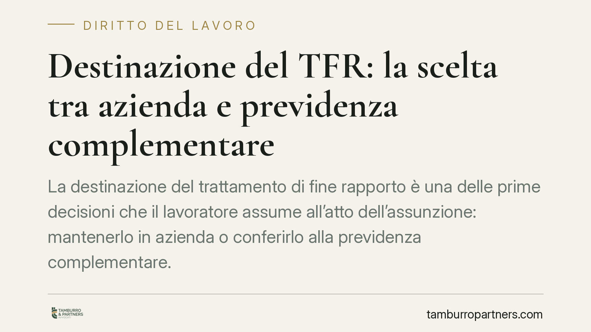

Destinazione del TFR: la scelta tra azienda e previdenza complementare
La destinazione del trattamento di fine rapporto è una delle prime decisioni che il lavoratore assume all'atto dell'assunzione: mantenerlo in azienda o conferirlo alla previdenza complementare. La scelta segue regole precise, con un meccanismo di silenzio-assenso che opera in assenza di manifestazione espressa. Circolano riferimenti a un nuovo modulo di comunicazione: vanno letti con cautela, alla luce della disciplina vigente.

Il quadro di riferimento
La disciplina della destinazione del TFR è contenuta nel D.lgs. 5 dicembre 2005, n. 252, in materia di forme pensionistiche complementari. Il TFR maturando può seguire due strade: restare accantonato presso il datore di lavoro (o essere versato al Fondo di Tesoreria INPS, per le imprese sopra una certa soglia dimensionale) oppure essere conferito a una forma di previdenza complementare, ad esempio un fondo pensione negoziale, aperto o un PIP.
Il nodo pratico è il meccanismo del silenzio-assenso disciplinato dall'art. 8 del D.lgs. 252/2005. Il lavoratore ha sei mesi dalla data di assunzione per manifestare la propria scelta. Trascorso tale termine senza una manifestazione espressa, il TFR maturando viene conferito tacitamente alla forma pensionistica complementare individuata dai criteri di legge (di norma quella prevista dai contratti collettivi applicabili). È bene tenere a mente questo termine: la disciplina consolidata fa riferimento a sei mesi dall'assunzione, non ad altri termini più brevi.
Attenzione ai riferimenti non confermati
Circolano segnalazioni relative a un nuovo modulo di comunicazione della destinazione del TFR e a un decreto interministeriale che ne avrebbe fissato l'adozione. In via di prima lettura, e salvo verifica del testo ufficiale in Gazzetta Ufficiale, suggeriamo di non assumere come dato certo alcun termine diverso da quello previsto dall'art. 8 D.lgs. 252/2005. Qualsiasi modulistica di nuova introduzione va valutata sul testo pubblicato: un modulo è uno strumento operativo, non modifica di per sé i termini di legge, che restano quelli fissati dalla fonte primaria fino a intervento normativo espresso e verificabile.
Su una materia che incide sul risparmio previdenziale, la prudenza impone di distinguere tra la norma in vigore e le comunicazioni ancora prive di riscontro ufficiale certo.
Implicazioni per il lavoratore
La scelta tra azienda e previdenza complementare non è neutra. Il TFR mantenuto in azienda si rivaluta secondo il coefficiente di legge (1,5% fisso più il 75% dell'inflazione ISTAT). Il TFR conferito a un fondo pensione segue invece l'andamento della gestione finanziaria prescelta, con i relativi profili di rischio e rendimento, e beneficia di un trattamento fiscale agevolato in fase di prestazione.
Un punto va precisato con rigore. La destinazione del TFR maturando alla previdenza complementare è, di regola, non revocabile: il lavoratore non può, con una successiva comunicazione, riportare in azienda il TFR che ha scelto di far confluire nel fondo. Ciò non significa, però, che la posizione resti immutabile in ogni suo aspetto. Restano infatti impregiudicate le facoltà previste dal D.lgs. 252/2005, quali il trasferimento della posizione ad altra forma pensionistica e, al ricorrere dei presupposti di legge, le anticipazioni e i riscatti. Si tratta di istituti distinti dalla revoca della destinazione, che vanno tenuti separati per evitare confusione.
Implicazioni per il datore di lavoro
Sul datore di lavoro gravano precisi obblighi informativi e procedurali. Deve mettere il neoassunto in condizione di scegliere consapevolmente, gestire la modulistica di comunicazione e dare corretta attuazione al silenzio-assenso al maturare del termine di legge. Errori nella gestione del versamento o nel rispetto dei termini possono generare contenzioso e responsabilità.
È opportuno che le funzioni HR verifichino periodicamente l'allineamento delle procedure interne e della modulistica alle fonti aggiornate, adottando eventuali nuovi moduli solo dopo averne riscontrato la pubblicazione ufficiale.
Cosa fare in concreto
- Verificare la fonte ufficiale di ogni nuovo modulo o termine prima di applicarlo: il riferimento primario resta l'art. 8 D.lgs. 252/2005.
- Rispettare il termine di sei mesi dall'assunzione per la manifestazione della scelta, salvo diversa previsione confermata dalla Gazzetta Ufficiale.
- Valutare la destinazione del TFR confrontando rivalutazione in azienda e profilo del fondo pensione, tenendo conto del trattamento fiscale.
- Distinguere l'irrevocabilità della destinazione del maturando dalle facoltà di trasferimento, anticipazione e riscatto della posizione previdenziale.
- Aggiornare le procedure HR e la modulistica solo su testi normativi pubblicati e verificabili.
---
Contributo informativo a cura di Tamburro & Partners - Avv. Giuseppe Tamburro. Non costituisce parere legale.
Ogni storia di lavoro ha i suoi tempi.
Se gestisci HR e vuoi un confronto su contenzioso, ispezioni o licenziamenti, scrivi allo studio. Ti rispondiamo entro un giorno lavorativo.